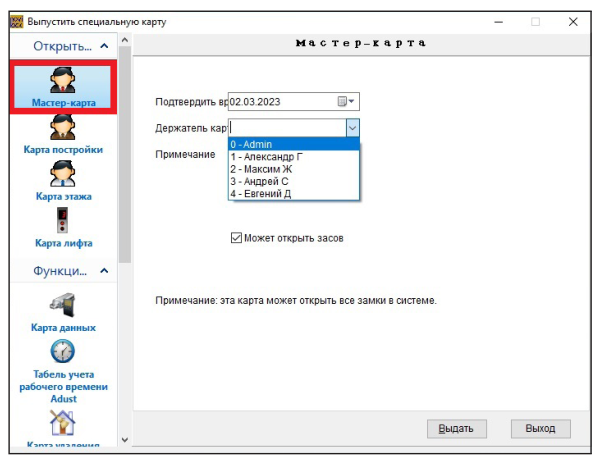
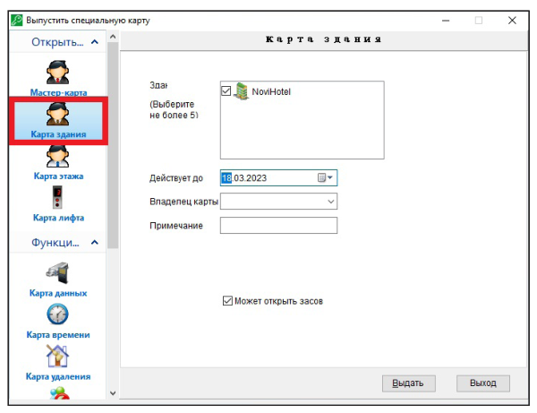
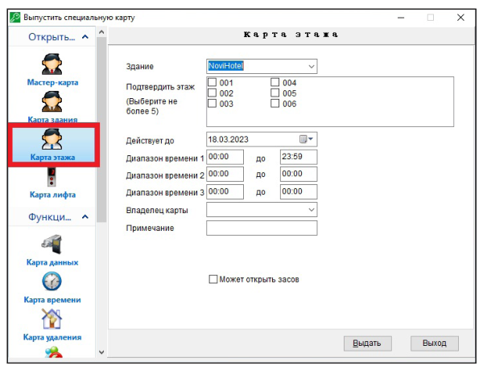
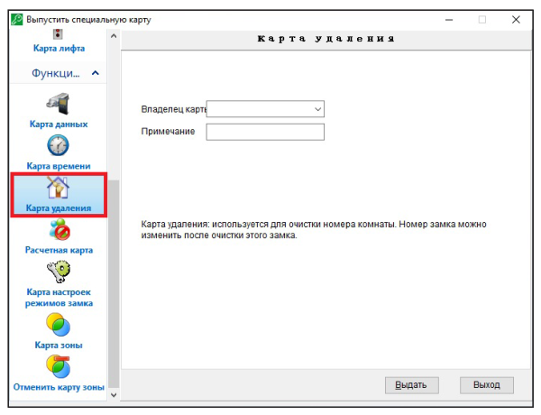
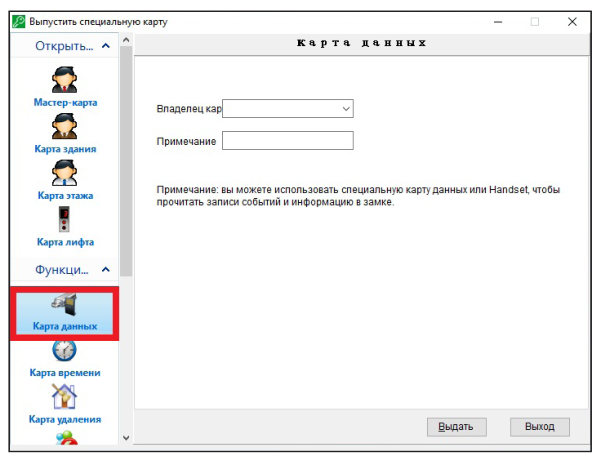
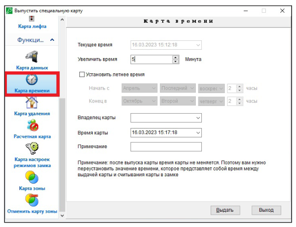
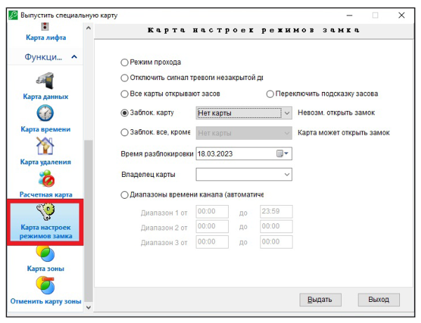
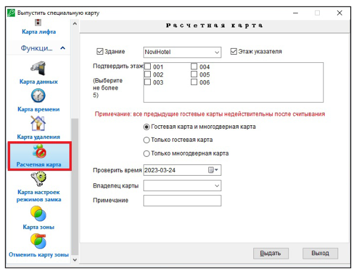
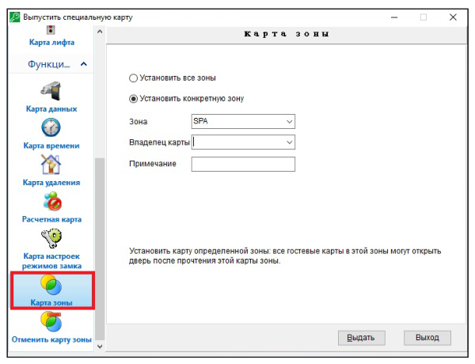
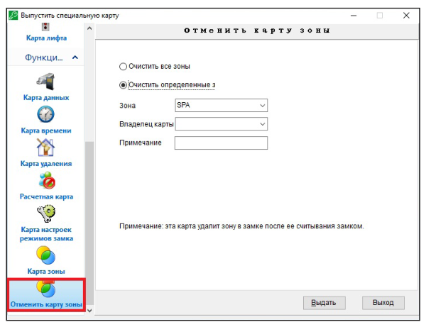

Специальные карты
Руководство пользователя · Электронные замки Novilock™ Classic Slim


СПЕЦИАЛЬНЫЕ КАРТЫ
Главная карта (мастер карта) В меню выберите Специальные карты далее Мастер карта. Положите карту на энкодер, установите период действия, обозначьте владельца карты, режим пропуска, разблокировку засова, необходимость блокировки предыдущих карт и нажмите Выдать для завершения действия. Данная карта сможет открывать все номера в гостинице (Рис. 42).
Карта здания В меню выберите Специальные карты далее Карта Постройки. Положите карту на энкодер, после чего выберите Карта Постройки. Если у вас несколько зданий, выберите здание, в котором данная карта будет действовать, период ее действия, укажите владельца карты, режим пропуска (разблокировку засова) и нажмите Выдать для завершения действия. Данная карта может открывать все номера в указанном здании (Рис. 43).


Карта этажа В меню выберите Специальные карты далее Карта Этажа. Положите карту на энкодер, после чего выберите Карта этажа. Укажите здание и этаж/этажи в нем, на котором данная карта будет действовать, период ее действия, обозначьте владельца карты, режим пропуска (разблокировку засова) и нажмите Выдать для завершения действия. Данная карта может открывать все номера на указанном этаже здания и в указанные временные промежутки (Рис. 44).
Карта удаления В меню выберите Специальные карты, далее Карта Удаления. Положите карту на энкодер, перейдите в меню Специальные карты, далее выберите пункт Карта Удаления, после чего обозначьте владельца карты. Данная карта удалит информацию из замка, если нужно изменить номер замка или заблокировать его. После удаления информации, замок можно программировать заново, см. Установка и настройка замка (Рис. 45).


Карта Данных В меню выберите Специальные карты, далее Карта данных. Положите на энкодер карту данных (Mifare 4K S70), после чего выберите владельца карты и нажмите Выдать для завершения действия. Об использовании карт данных читайте в разделе Запросы и отчеты (Рис. 46).
Карта времени В меню выберите Специальные карты далее Карта времени. Положите карту на энкодер, после чего выберите Карта времени. Убедитесь в правильно выбранном времени, введите Разница во времени – время на путь от энкодера до замка – Выдать для завершения действия. Считайте карту на замке. Рекомендуется ежемесячно настраивать время в замке (Рис. 47).


Карта настроек режимов замка В меню выберите Специальные карты, далее Карта настроек режимов замка, далее выберите режим, время окончания действия (для блокировок), обозначьте владельца карты, и нажмите Выдать для завершения действия.
Режимы Свободный проход: установка/снятие проходной функции замка (замок будет открываться и закрываться по карте). Отключить сигнал уведомления об открытой двери: замок не сигнализирует о том, что дверь закрыта неправильно или не полностью. Открывать засов всеми картами: карты будут открывать засов, даже если он задвинут. Заблокировать данную карту: выбранный тип карты не сможет открыть замок. Заблокировать все карты, кроме: только одна выбранная карта сможет открыть замок (Рис. 48).
Расчетная карта В меню выберите Специальные карты далее Расчетная карта, выберите оператора или тип карты, здание и этаж. Считайте данную карту аннуляции в замке, после чего гостевая карта не сможет открыть номер. Данная операция доступна для всех карт за исключением карты авторизации Authorization Card (Рис. 49).


Карта зоны В меню выберите Специальные карты далее Карта зоны, далее выберите пункт Установить все зоны или Установить конкретную зону, положите карту на энкодер, выберите номер зоны, укажите владельца карты и нажмите Выдать. Чтобы добавить информацию о зоне в замок, считайте эту карту в замке (Рис. 50).
Отменить карту зоны В меню выберите Специальные карты далее Отменить карту зоны, далее выберите Очистить все зоны или Очистить определенные зоны, положите карту на энкодер, выберите номер зоны, укажите владельца карты и нажмите Выдать. Чтобы удалить информацию о зоне и замка, считайте эту карту на замке (Рис. 51).